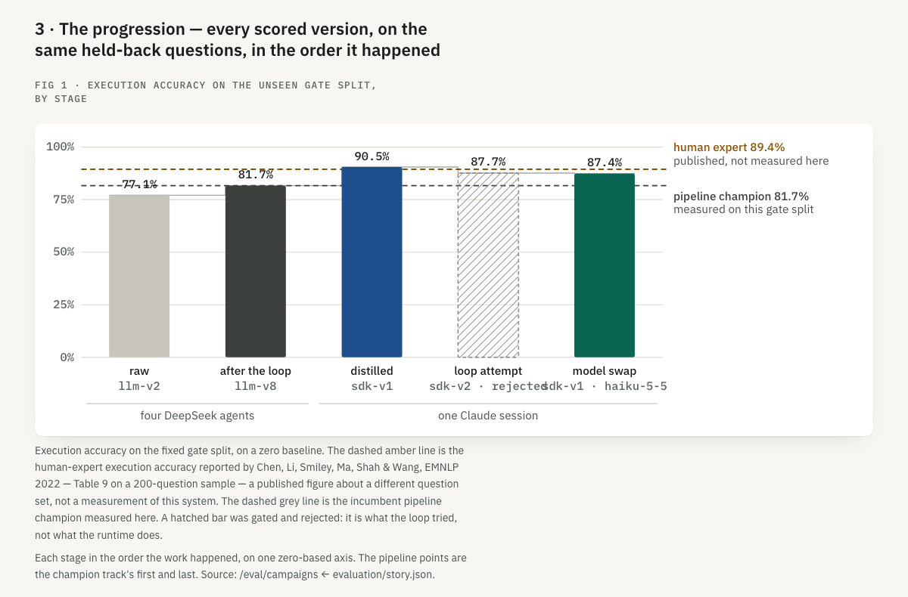
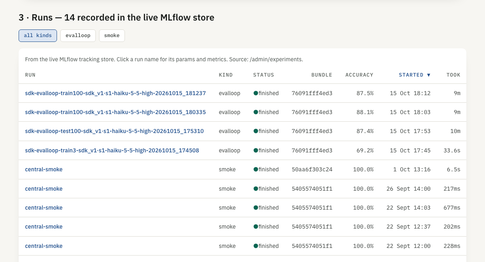
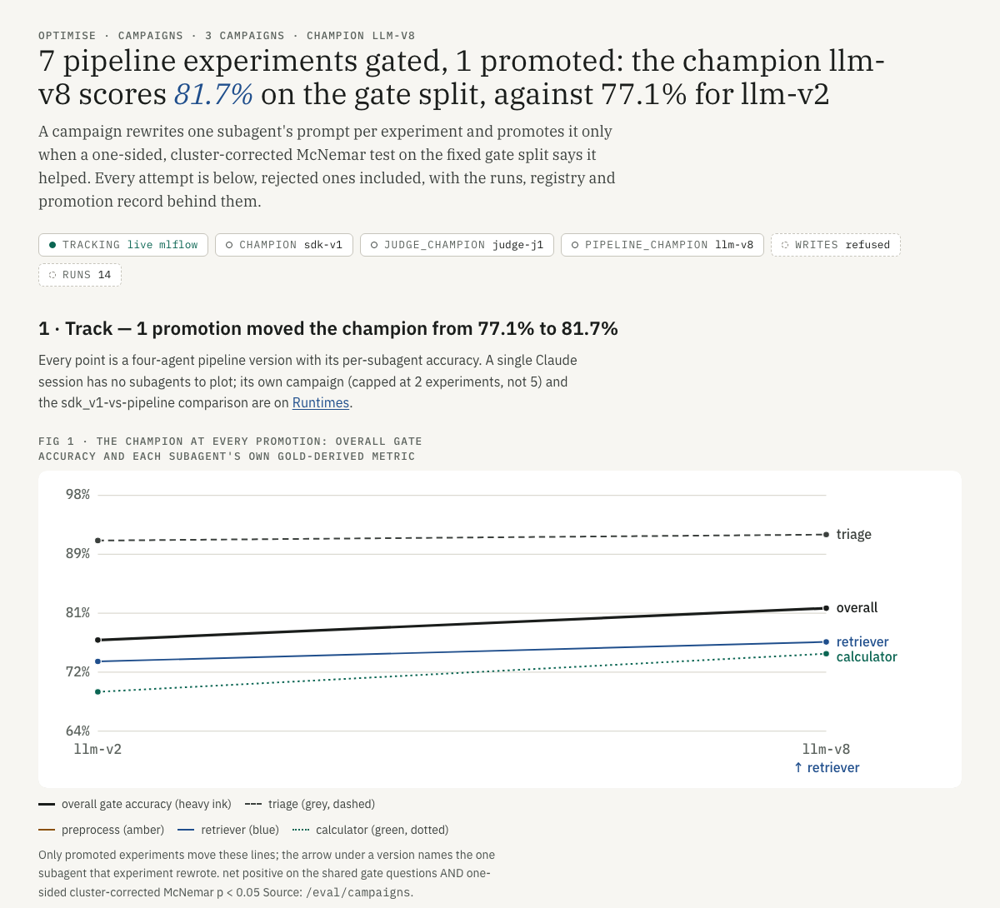
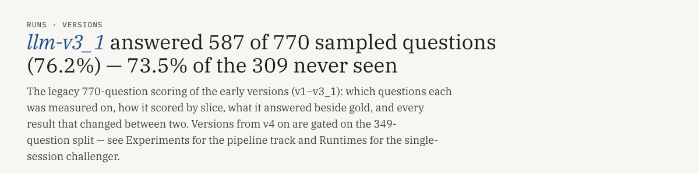
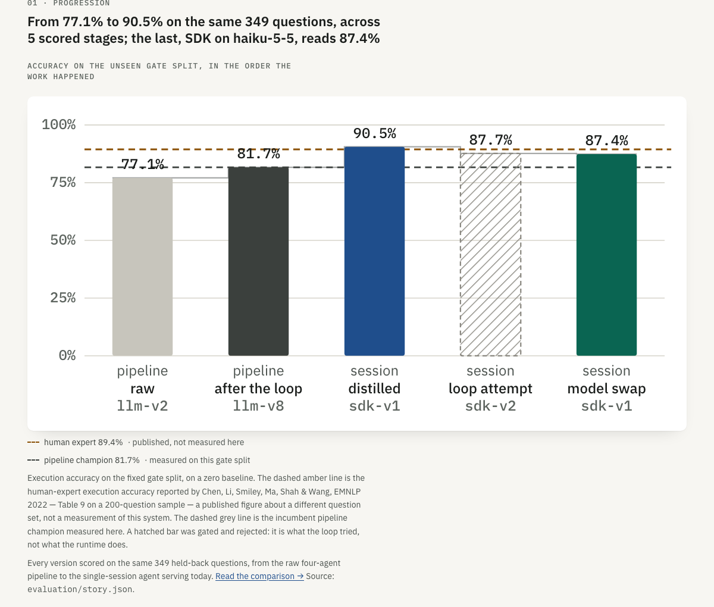

optimsation · 2026-10-15 · plan, nothing built · no model has been calledShow every agent's test score over time first, then let the Haiku challenger learn from its own mistakes
Two pieces of work, in the order you asked for. Part A makes the Runs and Optimise tabs tell the whole story.
Every agent that has been scored, champion and challenger alike, appears on one test-split timeline with its model, its
verdict and the champion line it was measured against. Part B builds and runs an optimisation loop for the challenger
sdk_v1 · claude-haiku-5-5 · effort high. The loop diagnoses Haiku's train failures, rewrites its system prompt, re-scores train
and test on Haiku, and pairs the result against the champion's own committed runs. Today the loop can't run on a
challenger with a different model without polluting the record, so Part B starts with what has to change.
The story
A test-only timeline and ledger of every agent. Runs leads with it, Optimise opens with it, and two mislabels plus one live bug get fixed.
A model-aware loop
Eleven changes so a challenger's model is pinned, recorded, pooled apart and promoted as a whole agent.
Run the loop
Campaign h01, up to 2 cycles. Each cycle: diagnose, rewrite, score test + train on Haiku, verdict against the champion.
Read it
The new points land on the timeline by themselves. A results write-up follows, like s20.
The record holds the whole story, but every page shows a different slice of it
Screenshots from this branch at 1280px (backend 8767, frontend 5191), taken today. Two research passes read the code and data behind each page, and every claim below cites them.
Runs › Versions & slices
wrong storyIt leads with "llm-v3_1 answered 587 of 770". That's the legacy 770-question set for v1–v3_1, which mixes in the conversations the optimiser trained on
(Evaluations.tsx:352). It shows no model, effort, runtime or prompt lineage per row, and no SDK agent at all.
Optimise › Campaigns
pipeline onlyThe headline says "the champion llm-v8", but v8 is the pipeline champion and sdk_v1 is the champion. The track has 2 points, spaced by
index, both stamped with v8's time (story.py:1160). The Runs table lists the live store's 14 runs, with train, test and smoke (100%)
in one unlabelled accuracy column.
Optimise › Runtimes, Fig 1
5 bars, no datesIt shows v2, v8, sdk_v1, sdk_v2 and "model swap". The model-swap bar is models[1], so Haiku 4.5 is absent. Haiku 5.5's falls-short bar is drawn in
the passed colour with no rejected hatch (runtimeStory.ts:486). Two labels overprint each other.
A live bug on Runtimes §5
wrong numberSDK experiment accuracies are looked up by prompt version alone (story.py:97-104), so "sdk_v1" now resolves to a Haiku run.
The page prints sdk_v1 at 87.39% beside its +8.88pp win. The gates ledger has the right 90.54%.
Overview
misleading frame"…across 5 scored stages; the last, SDK on haiku-5-5, reads 87.4%". A challenger that fell short reads as the system's latest stage, which looks like a regression.
Promotions never reach a chart
text onlyThe universal-champion handover, the rollbacks and the SDK promotion appear only as text rows in Registry › History, with no model and no accuracy.
lineage[] keeps only event == "promote" (story.py:188).


More screenshots: the Campaigns track, the Runs headline, the Overview progression, and the full pages



Full pages: runs · optimise · runtimes · overview · served turns · rule research


One axis, one question set, every agent: this is the chart Part A builds
A mock, drawn from the committed record: the 12 complete passes on test100 (eval_loop_v2, 349 questions,
100 conversations). Only the test split appears, because train is what writes each version. Points are in the order they were scored,
banded by date, because three days of work followed by a five-week gap would put eleven points in one corner of a linear time axis.
The champion line is a step: it moves only when something is promoted.
DESIGN.md: --ok promoted, --red rejected.
One pass is excluded: sdk_v1 on Sonnet at 13:24 on 5 Sep, 44.4%, with 176 of 349 turns rate-limited. An incomplete pass is not a
measurement, and the table below says so instead of plotting it.The ledger under the chart: every test pass, one row each
| scored (AEDT) | agent: prompt · model · effort | runtime | test100 | vs champion of the day | verdict | paid |
|---|---|---|---|---|---|---|
| 4 Sep 03:25 | v2 · DeepSeek ×4 | pipeline | 77.08% | starting champion | baseline | — |
| 4 Sep 03:57 | v6 · DeepSeek ×4 | pipeline | 79.37% | +2.29pp · p 0.191 | rejected | — |
| 4 Sep 04:34 | v7 · DeepSeek ×4 | pipeline | 79.66% | +2.58pp · p 0.132 | rejected | — |
| 4 Sep 05:27 | v8 · DeepSeek ×4 | pipeline | 81.66% | +4.58pp · p 0.040 | promoted | — |
| 4 Sep 13:24 | v9 · DeepSeek ×4 | pipeline | 81.66% | ±0.00pp · p 0.500 | rejected | — |
| 4 Sep 13:47 | v10 · DeepSeek ×4 | pipeline | 82.23% | +0.57pp · p 0.393 | rejected | — |
| 4 Sep 22:45 | v11 · DeepSeek ×4 | pipeline | 83.09% | +1.43pp · p 0.254 | rejected | — |
| 4 Sep 23:04 | v12 · DeepSeek ×4 | pipeline | 81.38% | −0.29pp · p 0.551 | rejected | — |
| 5 Sep 13:24 | sdk_v1 · Sonnet 5 · high | agent_sdk | 44.41% | 176 turns rate-limited | incomplete · not plotted | $5.25 |
| 5 Sep 17:46 | sdk_v1 · Sonnet 5 · high | agent_sdk | 90.54% | +8.88pp vs v8 · p 0.0003 | promoted universal 15 Oct | $11.83 |
| 5 Sep 18:28 | sdk_v2 · Sonnet 5 · high | agent_sdk | 87.68% | −2.87pp · p 0.917 | rejected | $11.82 |
| 6 Sep 09:05 | sdk_v1 · Haiku 4.5 | agent_sdk | 87.39% | −3.15pp · p 0.051 worse | falls short | $7.63 |
| 15 Oct 17:53 | sdk_v1 · Haiku 5.5 · high | agent_sdk | 87.39% | −3.15pp · p 0.043 worse | falls short | $0.73 |
Every number above is in the committed record: mlflow_snapshot.json (runs), gates.jsonl (pipeline and s01 verdicts),
and story.json → sdk_model_comparison (model-swap verdicts). Pipeline passes show "—" for cost because DeepSeek spend was never
metered into the run. The four eval_loop_v1 passes (test10 and test50, 34 and 187 questions) are a different question set, so they are listed
beneath the table in the build, not on this axis.
One new list in story.json, read by three pages
- A1 · data:
story.test_timeline. One row per test100 pass of every agent:at,run_name,version,runtime,model,effort,accuracy,n_scored,complete,role(champion · challenger · baseline),outcome(promoted · rejected · falls_short · incomplete),vs(the champion of the day, its Δ and one-sided p) andcost. A second list,champion_steps, comes from registry history, includingpromote_sdk,promote_agentanduniversal_champion. Built instory.pyfrom the snapshot plus the store (merge-safe), joined togates.jsonlby eval run id and to the model-swap verdicts. The 13 runs are counted frommlflow_snapshot.jsontoday. - A2 · fix the live bug. Look up SDK experiment accuracy by the gate's
candidate_eval_run_id, not by prompt version (story.py:97-104), so "sdk_v1" can never resolve to a Haiku run again. Add a regression test with a Haiku run present. - A3 · Optimise opens with the story. A new first sub-tab, Story (
/optimise), holds the timeline (hand-drawn SVG on.dia, tokens only, reusingFigure) and the ledger. The current Campaigns page moves to/optimise/campaignswith a redirect. Its headline is rewritten around the champion agent, and "champion llm-v8" becomes "pipeline champion llm-v8". The s01 SDK experiments join its experiments table, and its Runs table gets split, runtime, model and effort columns, defaulting to test. - A4 · Runs leads with the ledger. The default view is Every test pass: the same rows, with filter chips for runtime, model and outcome. Train passes appear only behind a toggle that is off by default, labelled "train: writes versions, never promotes them". The legacy 770-question v1–v3_1 page becomes the sub-tab Legacy v1–v3_1, keeping its redirects.
- A5 · Runtimes and Overview stop calling a challenger a stage. Fig 1 draws every model swap, each with its effort, and a falls-short swap is hatched and red. The labels stop colliding. The Overview's headline and compact chart become the timeline's compact form: "champion 90.5%; challengers since: Haiku 4.5, Haiku 5.5, both −3.15pp".
- A6 · tests. vitest for the timeline builder (ordering, date bands, the excluded incomplete pass, the champion step) and for the chart and ledger
rendering; story tests for
test_timelineandchampion_steps; updates toroutes.test.tsx,runtimeStory.test.tsxand the landing tests; and a Playwright spec that opens/optimiseand/runsand asserts the chart has 12 points and the ledger 13 rows.story_checkfails a page that hides the timeline once runs exist.
Why the UI comes first. Once Part B runs, every cycle adds a point. Without A, each new sdk_v3 or sdk_v4 pass would land in the same mixed run table and the same five-bar chart that already hides Haiku 4.5. With A, the loop's progress against the champion shows up on its own, in the place you look.
The champion stays fixed and is never re-run. Only the challenger's prompt moves.
Why it can't run on Haiku today: five breakages
| # | what breaks | evidence | what would go wrong |
|---|---|---|---|
| 1 | cycle can't pin the answering model | no --sdk-model/--sdk-effort on cycle (cli.py:343-371); run_split resolves the champion record (runner.py:608) |
Without an env override it scores Sonnet. Without --baseline-gate-csv it re-runs the champion (cycle.py:371-379), which your rule forbids |
| 2 | Haiku's diagnoses pool with Sonnet's | rank_classes filters on runtime + prompt hash only (sdk_teacher.py:1057-1061) |
The ledger already holds 56 Sonnet sdk_v1 diagnoses under the same hash, so Sonnet's failures would steer Haiku's rewrite |
| 3 | The writer doesn't know the model | neither SDK_WRITER_PROMPT nor its payload names it (sdk_teacher.py:1335-1359) |
Its history says "don't re-propose a rejected change", and that history includes sdk_v2's rejection on Sonnet |
| 4 | No ledger records the answering model | ledgers.py:57-183: diagnoses, rewrites and gates carry versions and hashes only |
Haiku and Sonnet rows can't be told apart, and the ledgers are append-only, so it can't be fixed later |
| 5 | No promotion moves prompt and model | promote_sdk keeps the record's model (and now refuses Haiku evidence); promote_agent keeps the prompt |
A passing gate writes promoted=True to gates.jsonl before the promotion raises (cycle.py:399-411), leaving a promotion on record that never happened |
The build list, smallest viable first
- B1 ·
cycle --sdk-model --sdk-effort, passed to everyrun_split. When the model or effort differs from the champion's, the baseline is the record'sevidence_run, the champion is never run, and anything else is refused. - B2 · gate rows tell the truth. Split
gate_passedfrompromoted(a trailing column), and write the row after the promotion decision, so a refusal can't leave a falsechampion_after. - B3 · ledgers record the agent. Add trailing
sdk_model/sdk_effortcolumns on diagnoses and gates (baseline and candidate) andtarget_modelon rewrites. The 56 existing rows read asclaude-sonnet-5/high. Updatetests/test_ledgers.py, which pins the frozen columns. - B4 · pool per agent.
rank_classesand the diagnoser's memory filter on (prompt hash, model, effort). - B5 · reuse Haiku's train draws.
cycle --train-csv, repeatable and checked for slug, effort and version, skips step 1.propose --diagnosestakes several files. - B6 · the writer is told its target. Add
target_model/target_effortto the writer payload, and tag each prior attempt with its model. The prompt constant stays untouched, so old traces still resolve by hash. - B7 · a class for "gave up". The frozen taxonomy has nothing for "declined a value the document contains", so those cases fall into
ambiguous, and some drop out of the ranking. Map the writer'snew:labels for it onto one stable class, without editingTEACHER_PROMPT. - B8 · lineage.
prompt_ledger.ensure_sdktakes the base version, so sdk_v3's parent is recorded as s1, not s2. - B9 · the challenger verdict.
storypairs any (version, model, effort) test pass against the champion'sevidence_run, and its train passes against the champion's draws with the same seed, using the existingmodel_swap_verdict. The verdict carriesversion,candidate_model,candidate_effortandcandidate_run. - B10 · promote the whole agent.
registry.promote_challengermoves version, model and effort together, on a passing verdict from test evidence, with the_ran_aschecks and the new floor. The cycle routes a model-differing challenger there and never topromote_sdk. - B11 ·
gate-targeted --campaign --label --rewrite-id, so step-by-step runs still count against the campaign cap.
Campaign h01: up to two cycles, each one scored like s19 was
| step | what runs | model | time | API-equivalent |
|---|---|---|---|---|
| 1 | Haiku's train failures. Cycle 1 reuses the two committed sdk_v1 draws (seeds 2027 and 2028, 37 + 39 first-wrong conversations). Cycle 2 uses sdk_v3's own train passes from step 4 | none | 0 | $0 |
| 2 | Diagnose each first-wrong case. ambiguous cases get one binary question | Opus 5 teacher | ≈ 5 min at concurrency 8 | ≈ $11 |
| 3 | Rewrite to prompts/sdk_v3.py, one edit per ranked class, registered in sdk_prompts | Opus 5 writer | ≈ 2.5 min | ≈ $0.71 |
| 4 | Score sdk_v3 on Haiku 5.5 · high: test100, then train seeds 2027 and 2028 (stopping at the first wrong answer), all at concurrency 4 like the baseline | Haiku 5.5 | ≈ 28 min | ≈ $2.0 |
| 5 | The verdict: test paired question by question against …sdk_v1·s1-20260905_174627, train per conversation against the champion's 2027/2028 draws, and the 3pp rule from s19 | none | seconds | $0 |
| 6 | Promote the whole agent on a passing verdict, or record the rejection and start cycle 2. Then rebuild the story, so the point appears on the timeline | none | seconds | $0 |
≈ 40 min and ≈ $14 API-equivalent per cycle, all on the subscription. The SDK runtime is subscription-only and is never billed to the API.
A rate-limited pass is finished with --resume-from, never by switching billing. Before the first scoring pass, a 3-report smoke test checks that sdk_v3
on Haiku still emits the output contract.
What could make the result untrustworthy
The gate split gets read again
Every cycle reads test100 once more, and it has already been read by at least ten gated comparisons. Two cycles is a small adaptive cost. More than that starts tuning to the gate. The cap is the guard, and the sealed holdout stays sealed.
Train re-scoring is in-sample
The rewrite is written from draws 2027 and 2028, so re-scoring them measures "did it fix what it read", not generalisation. That's acceptable only because train can veto but never promote, and these are the only seeds with champion runs to pair against.
A prompt tuned for one model
sdk_v3 is written for Haiku. If it wins, the champion becomes (sdk_v3, Haiku 5.5, high) as a whole. Serving Sonnet with sdk_v3 would be an unscored configuration, so promotion must move all three together (B10).
The first-batch ceiling effect
Conversations that open a pass together each write the ~50k tool prefix against their own 60k ceiling. Both arms paid this in s19, and the verdict's ceiling check should count only errors after a conversation's first turn, or say why it doesn't.
Six calls that are yours, each with a recommendation
Pick an option and queue it. Everything else in this plan follows from the code and your earlier rules (never re-run the champion, subscription only, test promotes, train optimises).